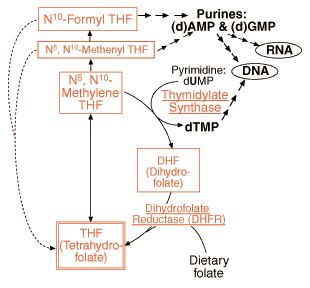

B12/Folate Problem set
Question 5: Folate in the synthesis of DNA
Tutorial to help answer the questionFolate derivatives are required for the synthesis of which DNA nucleotides?
A. adenylate and guanylate B. cytidylate and thymidylate C. all four nucleotides D. thymidylate only E. adenylate, guanylate, and thymidylate
Tutorial
Three out of four|
By way of review:
 Purines and pyrimidines each have common biosynthetic pathways, with the individual bases being formed by terminal modifications. In the purine pathway, N5, N10-methenyl THF are needed early on and are thus required for all purines (even ones like IMP that are not contained in DNA/RNA). After their utilization in purine biosynthesis, both N5, N10-methenyl THF and N10-formyl THF are recycled as THF (see figure above). Pyrimidines, on the other hand, do not require folate for the "core" biosynthetic reactions. It is only the very terminal step in the formation of dTMP that requires folate in the form of N5,N10-methylene THF. More about this reaction in the next question... |


Department of Biochemistry and Molecular Biophysics
The University of Arizona
January 31, 2000
Contact the Development Team
http://www.biology.arizona.edu
All contents copyright © 2000. All rights reserved.